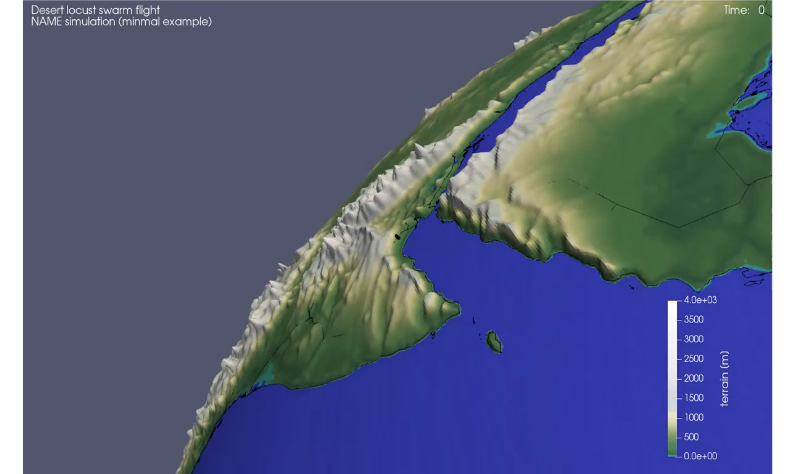

Locust Responsive


Our research shows that integrated aerobiological epidemiology modelling systems are advantageous for explaining how weather events facilitate relocation of desert locust movement between Yemen over the Gulf of Aden and the East African continent.

Take a look at the articles:
Meyer M., Thurston W., Smith J.W., Schumacher A., Millington S.C., Hodson D.P., Cressman K. and Gilligan C.A. (2023), Three-Dimensional Visualization of Long-Range Atmospheric Transport of Crop Pathogens and Insect Pests. Atmosphere, 14, 910. https://doi.org/10.3390/atmos14060910
Retkute, R.; Hinton, R.G.K.; Cressman, K.; Gilligan, C.A. Regional Differences in Control Operations during the 2019–2021 Desert Locust Upsurge. Agronomy 2021, 11, 2529. https://doi.org/10.3390/agronomy11122529
Key Team members
- Dr Renata Redkute
- Dr Jacob Smith